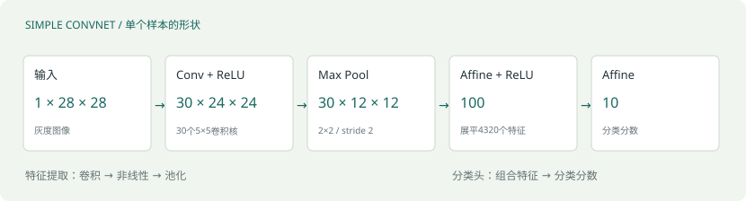

CHAPTER 07 / NUMPY FIELD GUIDE
从窗口，到分类。
卷积神经网络的关键，是先让窗口处理局部空间，再让全连接层组合特征。沿着一张图像的形状变化，把前向计算和反向梯度接起来。
先看整条网络
第5章的前向、反向和参数更新仍然适用。本章新增的是处理四维图像的卷积层与池化层。

卷积：在不同位置找同一种特征
同一个卷积核滑过整张图，各位置复用同一组权重。局部窗口保留相邻像素的关系；多个卷积核产生多个输出通道。
池化：每个通道各自缩小
最大池化只从窗口里取最大值，没有可学习参数。它缩小空间尺寸，保留通道数；分类头仍由熟悉的 Affine 层组成。
卷积窗口计算
取出一个局部窗口，与卷积核对应位置相乘并求和，再加偏置，得到输出中的一个数。输入有多个通道时，同一个核覆盖全部输入通道，各通道的乘积也一起求和。
→ 1×1 + 2×0 + 3×0 + 4×(−1) = −3
这里的“·”表示对应位置相乘后求和。教材和当前代码直接滑动计算，不预先翻转卷积核。
| 符号 | 含义 | 当前网络 |
|---|---|---|
(N,C,H,W) | 批次、输入通道、高、宽 | (N,1,28,28) |
(FN,C,FH,FW) | 核数、输入通道、核高、核宽 | (30,1,5,5) |
P / S | 四周补零圈数 / 窗口移动步幅 | 0 / 1 |
(N,FN,OH,OW) | 核数决定输出通道数 | (N,30,24,24) |
OW = (W + 2P − FW) // S + 1
例：(28 + 0 − 5) // 1 + 1 = 24
补零改变可覆盖的边界；步幅越大，可放置的窗口位置通常越少。这里按工具函数的整数除法计算，只统计完整窗口。
im2col：把窗口交给矩阵乘法
每个空间位置取出一个跨通道窗口，摊成一行；每个卷积核摊成一列。一行与一列的内积就对应一个输出值。
× col_W (C·FH·FW, FN)
→ out_2d (N·OH·OW, FN)
col = im2col(x, FH, FW, self.stride, self.pad)
col_W = self.W.reshape(FN, -1).T
out = col @ col_W + self.b
out = out.reshape(N, OH, OW, FN).transpose(0, 3, 1, 2)窗口展开的形状示例
输入 (1,3,7,7)，核为 5×5，S=1、P=0。输出高宽都是 3，所以有 1×3×3=9 行；每行含 3×5×5=75 个值。
批次增至 10，只增加窗口行数：(90,75)。
输出轴顺序与 transpose
矩阵结果按“样本 → 位置 → 核”排列，reshape 后是 (N,OH,OW,FN)。transpose 把核数移到通道轴，得到 (N,FN,OH,OW)。
reshape 改变分组，transpose 改变轴顺序。
卷积反向：先求导，再放回窗口
把前向写成 Y = A @ B + b，其中 A 是 col，B 是 col_W。你在 Affine 学过的矩阵求导在这里可以直接复用。
# 对齐前向矩阵排列：G.shape = (N*OH*OW, FN)
G = dout.transpose(0, 2, 3, 1).reshape(-1, FN)
self.db = G.sum(axis=0)
dcol_W = self.col.T @ G
self.dW = dcol_W.T.reshape(FN, C, FH, FW)
dcol = G @ self.col_W.T
dx = col2im(dcol, self.x.shape, FH, FW, self.stride, self.pad)| 求什么 | 为什么这样算 | 结果形状 |
|---|---|---|
db | 偏置在所有样本和位置复用，贡献相加 | (FN,) |
dcol_W = A.T @ G | 每个窗口的输入 × 该窗口上游梯度 | (C·FH·FW,FN) |
dcol = G @ B.T | 通过各卷积核把梯度传回窗口元素 | 与 col 同形 |
dx = col2im(...) | 恢复窗口位置，并累加重叠贡献 | 与输入 x 同形 |
一个像素可能参与多个窗口，梯度来自多条路径。比如窗口 [a,b] 和 [b,c] 分别传回 [1,2] 与 [3,4]，原输入梯度是 [1,5,4]。col2im 是梯度的汇合，不是简单还原原图。
池化：拆开通道，再送回梯度
卷积把所有输入通道一起求和；最大池化则在每个通道内独立比较。两者都使用 im2col，但池化要多做一次分组。
col = im2col(x, pool_h, pool_w, stride, pad)
col = col.reshape(-1, pool_h * pool_w)
self.arg_max = np.argmax(col, axis=1)
out = np.max(col, axis=1)
out = out.reshape(N, OH, OW, C).transpose(0, 3, 1, 2)
反向不求参数，只传 dx
收到梯度 2 → 窗口梯度 [0, 2, 0, 0]
先把窗口梯度设为零，在保存的 arg_max 位置填入上游梯度，再用 col2im 汇回输入。当前实现遇到并列最大值时，把梯度给 argmax 选中的第一个位置。
当前 Pooling 尺寸公式按 pad=0 使用，网络设置为 2×2、stride=2。没有参数不等于可以跳过 backward。
形状与参数，放在一起查
| 位置 | 输出（含批次轴） | 可学习参数 |
|---|---|---|
| 输入 | (N,1,28,28) | — |
| Conv1 → ReLU1 | (N,30,24,24) | W1 (30,1,5,5)b1 (30,) |
| Pool1 | (N,30,12,12) | — |
| Affine1 内部展平 | (N,4320) | 30×12×12 = 4320 |
| Affine1 → ReLU2 | (N,100) | W2 (4320,100)b2 (100,) |
| Affine2：分类分数 | (N,10) | W3 (100,10)b3 (10,) |
dW、db 与对应参数同形。Affine 前向保存原形状，反向把二维 dx 恢复成池化输出的四维形状，再往前传。
predict、loss 与 gradient 的职责
predict 顺序执行各层，得到分类分数；loss 再接 SoftmaxWithLoss。gradient 先调用 loss 建立前向缓存，再倒序执行 backward，最后收集六组参数梯度；它本身不更新参数。
默认字典参数与 None
默认字典在函数定义时创建，被省略该参数的多次调用共享。用 None，再在函数内部创建字典，让每次调用获得独立默认配置。整数、元组等不可变默认值不属于这一问题。
一次求导，与一次更新
# 输入保留四维；当前损失层使用 one-hot 标签
load_mnist(normalize=True, flatten=False, one_hot_label=True)
grads = network.gradient(x_batch, t_batch) # 前向 + 反向
for key in network.params:
network.params[key] -= learning_rate * grads[key] # SGD更新每轮 permutation 打乱编号，用相同编号取图像和标签。全量 60000 张图、batch=100，一轮包含 600 次更新。原地 -= 使层对象引用的参数数组同步改变。

准确率看趋势，末批 loss 看局部
准确率在每轮结束后分批评价全量数据。batch loss 是最后一批更新后的损失，不是整轮平均；不同轮的末批不同，数值起伏很正常。
训练结果与泛化差距
第17轮训练与测试差 1.01 个百分点，后段训练准确率仍上升，测试提升已放缓。它提示继续观察泛化差距，不能单独证明某个设计带来多少提升。
当前源码：SGD，lr=0.1，epochs=20，计划12000次更新。保存日志：epoch 1/50 至 17/50，随后 KeyboardInterrupt。重新执行含 network=SimpleConvNet() 的单元格会重新初始化，不会自动续训。
作者示例采用 Adam(lr=0.001)、20轮、batch=100，每轮用1000个样本评价；你的 SGD 循环做全量评价，耗时和曲线不必一致。
按需回忆，再回教材
挑一个卡住的点即可。把自己的解释或没看懂的代码发给我，我们继续拆解；这些练习不作为继续阅读的门槛。
阅读记录停在7.5，下一节是7.6「CNN的可视化」。运行结果与独立理解分开记录。